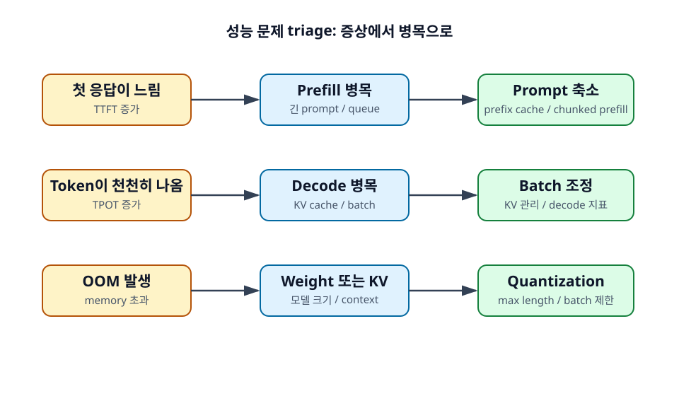

24장. 자주 발생하는 성능 문제¶
LLM serving 문제는 겉으로는 모두 "느리다" 또는 "OOM이 난다"로 보인다. 하지만 원인은 다르다. 첫 응답이 느린지, token이 천천히 나오는지, 특정 요청에서만 OOM이 나는지에 따라 확인할 지표와 해결 방향이 달라진다.

학습 목표¶
- 첫 응답이 느린 문제와 출력 token이 느린 문제를 구분한다.
- OOM 원인을 model weight와 KV cache 관점에서 진단한다.
- 성능 문제별로 우선 확인할 설정을 정리한다.
24.1 첫 응답이 느리다¶
첫 응답이 느리다는 것은 보통 TTFT가 크다는 뜻이다. 사용자는 요청을 보낸 뒤 아무 token도 받지 못한 채 기다린다. 원인은 긴 prompt, prefill 병목, queueing, tokenization, prefix cache miss일 수 있다.
24.1.1 Prompt가 너무 길 수 있다¶
Prompt token 수가 많으면 prefill 시간이 늘어난다. RAG 문서를 많이 넣었거나, 긴 대화 history를 그대로 포함했거나, tool schema가 지나치게 길면 TTFT가 증가한다.
먼저 요청별 input token 분포를 확인한다. 평균뿐 아니라 p95, p99 prompt length를 보는 것이 중요하다.
24.1.2 Prefill 병목일 수 있다¶
Prompt가 길지 않은데도 TTFT가 높다면 prefill queueing이나 scheduler 병목을 의심한다. 긴 prefill 요청이 decode 요청과 섞이며 GPU를 오래 점유할 수도 있다.
Chunked prefill, 긴 요청 분리, prefill worker 확장, batching 설정 조정이 후보가 된다.
24.1.3 Prefix caching을 검토한다¶
System prompt나 RAG template이 반복된다면 prefix caching으로 TTFT를 줄일 수 있다. Cache hit rate가 낮다면 prompt template이 불안정하거나, 동적 값이 prefix 앞부분에 들어가 있을 수 있다.
24.2 출력 token이 느리게 나온다¶
첫 token은 빨리 나오지만 이후 token이 천천히 나오면 TPOT 문제다. Decode 병목, KV cache 접근, batch size, memory bandwidth를 본다.
24.2.1 Decode 병목일 수 있다¶
Decode는 output token마다 반복된다. 긴 답변을 생성하거나 많은 요청이 동시에 decode 중이면 TPOT가 증가할 수 있다. Scheduler가 prefill과 decode 균형을 잘 맞추지 못해도 stream이 끊길 수 있다.
24.2.2 KV cache 접근 비용을 확인한다¶
Context가 길수록 decode 때 참조해야 하는 KV cache가 커진다. Long-context 요청에서 TPOT가 나쁘다면 KV cache 접근과 memory bandwidth를 의심한다.
DCP, KV cache quantization, max context 제한, 긴 요청 분리 같은 전략이 후보가 될 수 있다.
24.2.3 Batch size와 TPOT를 함께 본다¶
Batch size를 키우면 throughput은 좋아질 수 있지만, TPOT가 나빠질 수 있다. 특히 latency SLO가 중요한 서비스에서는 batch 관련 설정을 throughput만 보고 조정하면 안 된다.
Tokens/sec, TPOT, p95 latency를 함께 비교해야 한다.
24.3 OOM이 발생한다¶
OOM은 GPU memory가 부족하다는 뜻이지만, 원인이 model weight인지 KV cache인지 temporary buffer인지 구분해야 한다.
24.3.1 Model weight가 너무 클 수 있다¶
서버 시작 시 OOM이 난다면 model weight 자체가 GPU에 들어가지 않는 경우가 많다. Quantization, 더 작은 모델 선택, Tensor Parallel, Pipeline Parallel을 검토한다.
24.3.2 KV cache가 너무 클 수 있다¶
서버는 잘 뜨지만 요청 처리 중 OOM이 난다면 KV cache가 원인일 수 있다. 긴 context 요청, 큰 batch, 많은 동시 요청이 KV cache를 키운다.
이때는 max model length, max batched tokens, max concurrent requests, GPU memory utilization을 확인한다.
24.3.3 Max model length와 batch 설정을 조정한다¶
Max model length를 너무 크게 열어 두면 KV cache 예산이 커진다. 실제 workload가 8K 이하인데 128K를 열어 둘 필요가 없는 경우가 많다. Batch 관련 설정도 총 token 수 기준으로 조정해야 한다.
정리¶
성능 문제는 증상별로 나누어 진단한다. TTFT가 나쁘면 prompt와 prefill을 보고, TPOT가 나쁘면 decode와 KV cache를 본다. OOM은 model weight 문제인지 KV cache 문제인지 구분한다. 지표를 나누어 보면 튜닝 방향이 훨씬 명확해진다.
점검 질문¶
- 첫 응답만 느릴 때와 모든 token이 느릴 때는 무엇을 다르게 봐야 하는가?
- OOM 대응에서 max model length를 줄이는 것이 효과적인 경우는 언제인가?
다음 장으로¶
다음 장에서는 병목 상황별로 어떤 병렬화 전략을 선택할지 정리한다.